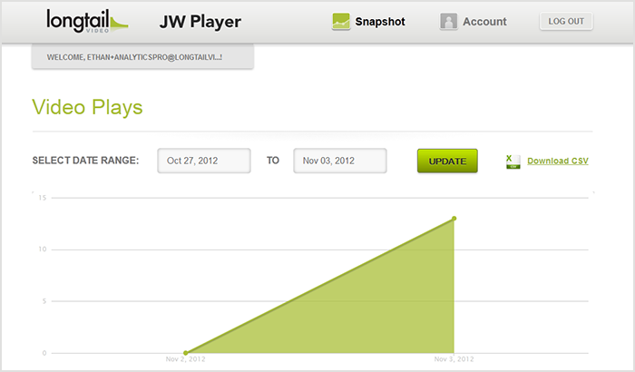

This guide explains how to enable and use the free JW Player analytics service. It is available in all JW6 editions, including Free.
JW6 offers a set of hosted services that augment the functionality of the client-side JW Player library. One of these services is JW Player Analytics, which provides basic video analytics to all users of JW Player. It is available for all users of JW Player, including those using the Free edition.
Video analytics can be found inside your JW Player Account (it also holds your download zip and license key). Analytics are automatically enabled when a valid license key is setup.
The Analytics section of your JW Player Account contains your analytics data. Two reports are available:
Here is a screenshot showing both reports, as well as a configurable start and end date for the reports:

Note that additional reports will be available in the near future.
JW Player Analytics are automatically enabled and matched to your account if you set your JW Player key. The key is found inside your JW Player Dashboard. It is set only once per page, just below the <script> that embeds the JW6 library:
<script type="text/javascript" src="/jwplayer/jwplayer.js" ></script> <script type="text/javascript">jwplayer.key="Ksio49Ksi8bdi8KS8S";</script>
Users of the Free edition can get a JW Player key by signing up and entering the dashboard.
Users of the Users of the Pro, Premium and Ads editions will likely already have a key set, since the key is also used to unlock the additional features of each edition.
The global jwplayer.key setting is all you need to have video analytics appear in your account. However, two advanced configuration options are available to change the behavior of the JW Player Analytics. Both are set inside a configuration block called analytics:
Here is an example setup that disables cookies for all its viewers:
jwplayer("myElement").setup({
file: "/uploads/example.mp4",
image: "/uploads/example.jpg",
analytics: {
cookies: false
}
});
See Embedding JW Player for more general info on embedding the player.